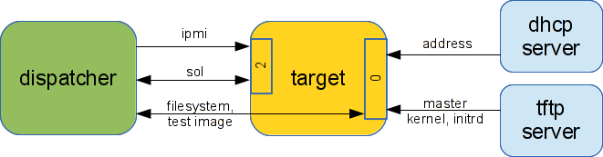
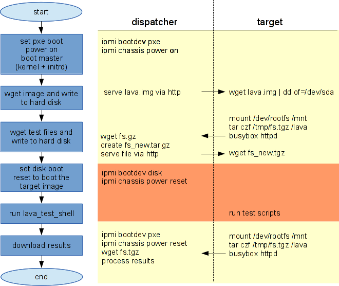

This page describes the hardware and software setup for IPMI/PXE-boot, such as the setup used by LAVA for a Calxeda Highbank target.
Dispatching a job to a pxe target involves several steps and communication between several machines, including servers traditionally used for lava, and also servers for serving the master address and master images for pxe booting.
The following diagram assumes the configuration for a Calxeda Highbank target. Specifically, it shows an ethernet port dedicated to ipmi/serial communications and a separate port used for booting the pxe image and also used as the target’s network connection.
dhcp server: Serves the dhcp address for the target, specifies the address of the tftp server for pxe boot.
tftp server: Serves the kernel and initrd to the target.
dispatcher: Controls the target via ipmi commands. Opens a serial-over-lan connection to send commands to the target.
target: Takes boot image from the tftp server, then is controlled by the dispatcher.
The target boots using pxe boot for any modifications that are needed to install the test image or to install or read files from the target. The target is booted from its own local media (i.e. a disk drive) for running the actual image and tests.
The first configuration step is to get ipmitool installed. On Ubuntu, this is very easy to do:
$ apt install ipmitool
Other systems might have ipmitool already available in their package repositories. If yours doesn’t, you can always install from source.
Device address configuration will vary for different targets. It is important to make sure that ipmitool can communicate with the target and that there is at least one ethernet port for use by the test image.
The specific address used for ipmi commands is specified in each target config file.
For Calxeda Highbank machines, each node uses three addresses, one for controlling the node, and two for networking.
There is no requirement that the nodes be named in any particular way. Lava requires two things with respect to addresses:
For example, the devices were named as follows for initial testing:
calxeda<mm>-<nn>-00 - eth0
calxeda<mm>-<nn>-01 - eth1
calxeda<mm>-<nn>-02 - control
where <mm> is the machine number and <nn> is the node number.
Using this naming convention, the following command turns on the power of calxeda machine number 2, node number 1:
$ ipmitool -H calxeda02-01-02 -U <user> -P <password> chassis power on
ipmitool is used to control power on the device, to select the boot source, and to open a serial terminal to the device.
powering on the device:
$ ipmitool -H <target> -U <user> -P <password> chassis power on
powering off the device:
$ ipmitool -H <target> -U <user> -P <password> chassis power off
resetting the device:
$ ipmitool -H <target> -U <user> -P <password> chassis power reset
selecting pxe boot:
$ ipmitool -H <target> -U <user> -P <password> chassis bootdev pxe
selecting disk boot:
$ ipmitool -H <target> -U <user> -P <password> chassis bootdev disk
Opening a serial connection over the network:
$ ipmitool -H <target> -I lanplus -U <user> -P <password> sol activate
Note: The serial-connection command is specified in the target type config file. This allows the user to specify a command for connecting to the serial terminal of a target:
highbank.conf
client_type = highbank
connection_command = ipmitool -I lanplus -U admin -P admin -H %(ecmeip)s sol activate
Some PXE bootloaders are unable to buffer serial input, causing loss of
characters. To simulate interactive command input, a delay can be added between
characters sent to the bootloader using the bootloader_serial_delay_ms
option in the device-type configuration. Values are specified in milliseconds:
bootloader_serial_delay_ms = 300
Some Serial over LAN (SOL) controllers are similarly unable to process bursts of input over the serial connection. The BMC drops the serial connection and outputs the error:
SOL session closed by BMC
To avoid this problem, set a delay to use between each character sent over the serial line during the operation of the test shell:
test_shell_serial_delay_ms = 100
See also
Differences in input speeds for the updated syntax on setting character delays in the device configuration.
busybox httpd is used to serve files from the target to the dispatcher. wget can then be used to download the files.
Execute on the target:
(initrd) cd /lava
(initrd) busybox httpd -f -v
(initrd) dispatcher
(initrd) wget http://calxeda02-02-00/fs.gz
PXE booting requires a dhcp and tftp services on the network. These services provide the kernel and initrd images to the target.
The addresses for each target are defined in dnsmasq.conf. In addition, the first interface is set up for tftp boot.
dnsmasq.conf (sample)
dhcp-host=set:lava-master,fc:2f:40:17:da:28,calxeda02-01-00,192.168.2.76
dhcp-host=fc:2f:40:17:da:29,calxeda02-01-01,192.168.2.77
dhcp-host=fc:2f:40:17:da:2a,calxeda02-01-02,192.168.2.78
dhcp-host=set:lava-master,fc:2f:40:08:7e:4c,calxeda02-02-00,192.168.2.79
dhcp-host=fc:2f:40:08:7e:4d,calxeda02-02-01,192.168.2.80
dhcp-host=fc:2f:40:08:7e:4e,calxeda02-02-02,192.168.2.81
...
# Set the boot filename for netboot/PXE. You will only need
# this if you want to boot machines over the network and you will need
# a TFTP server; either dnsmasq's built in TFTP server or an
# external one. (See below for how to enable the TFTP server.)
dhcp-boot=tag:lava-master,master/pxelinux.0
dhcp-boot=tag:netinstall,netinstaller/pxelinux.0
...
# Enable dnsmasq's built-in TFTP server
enable-tftp
# Set the root directory for files available via FTP.
tftp-root=/var/lib/tftpboot
The default configuration is specified in default-arm-highbank:
/var/lib/tftpboot/master/pxelinux.cfg/default-arm-highbank
DEFAULT menu
PROMPT 0
MENU TITLE LAVA Master Image
TIMEOUT 20
ONTIMEOUT lava-master
LABEL lava-master
initrd files/highbank/initrd.gz
MENU LABEL lava-master
append console=ttyAMA0 nosplash break
kernel files/highbank/vmlinuz
The kernel and initrd are then placed in the locations that are specified in the config file:
/var/lib/tftpboot/master/files/highbank (directory listing)
initrd.gz
vmlinuz
An initrd can be created from a running ubuntu system
Note: It is important to include a full-featured version of busybox. This version must support the ‘busybox –install -s’ command to automatically install links to commands that can then be called from a bash shell.
Copy the correct version of busybox into /usr/lib/initramfs-tools/bin:
$ /bin/busybox
BusyBox v1.19.3 (Ubuntu 1:1.19.3-7ubuntu1.1) multi-call binary.
Copyright (C) 1998-2011 Erik Andersen, Rob Landley, Denys Vlasenko
and others. Licensed under GPLv2.
See source distribution for full notice.
Usage: busybox [function] [arguments]...
or: busybox --list[-full]
or: function [arguments]...
BusyBox is a multi-call binary that combines many common Unix
utilities into a single executable. Most people will create a
link to busybox for each function they wish to use and BusyBox
will act like whatever it was invoked as.
Currently defined functions:
[, [[, adjtimex, ar, arp, arping, ash, awk, basename, blockdev, brctl, bunzip2, bzcat, bzip2, cal, cat, chgrp, chmod, chown,
chroot, chvt, clear, cmp, cp, cpio, crond, crontab, cttyhack, cut, date, dc, dd, deallocvt, depmod, df, diff, dirname, dmesg,
dnsdomainname, dos2unix, dpkg, dpkg-deb, du, dumpkmap, dumpleases, echo, ed, egrep, env, expand, expr, false, fdisk, fgrep, find,
fold, free, freeramdisk, ftpget, ftpput, getopt, getty, grep, groups, gunzip, gzip, halt, head, hexdump, hostid, hostname, httpd,
hwclock, id, ifconfig, ifdown, ifup, init, insmod, ionice, ip, ipcalc, kill, killall, klogd, last, less, ln, loadfont, loadkmap,
logger, login, logname, logread, losetup, ls, lsmod, lzcat, lzma, md5sum, mdev, microcom, mkdir, mkfifo, mknod, mkswap, mktemp,
modinfo, modprobe, more, mount, mt, mv, nameif, nc, netstat, nslookup, of, openvt, passwd, patch, pidof, ping, ping6, pivot_root,
poweroff, printf, ps, pwd, rdate, readlink, realpath, reboot, renice, reset, rev, rm, rmdir, rmmod, route, rpm, rpm2cpio,
run-parts, sed, seq, setkeycodes, setsid, sh, sha1sum, sha256sum, sha512sum, sleep, sort, start-stop-daemon, stat, static-sh,
strings, stty, su, sulogin, swapoff, swapon, switch_root, sync, sysctl, syslogd, tac, tail, tar, taskset, tee, telnet, telnetd,
test, tftp, time, timeout, top, touch, tr, traceroute, traceroute6, true, tty, tunctl, udhcpc, udhcpd, umount, uname, uncompress,
unexpand, uniq, unix2dos, unlzma, unxz, unzip, uptime, usleep, uudecode, uuencode, vconfig, vi, watch, watchdog, wc, wget, which,
who, whoami, xargs, xz, xzcat, yes, zcat
Note: The busybox command implements many commands by default, but it is best to include the actual binaries for each command since the busybox versions generally provide limited functionality.
Commands that are required in the initrd image include:
- bzip2
- gzip
- tar
- busybox (with httpd support)
- wget
- ifconfig
Note: It is good to include many common commands since the master initrd may be used for debugging issues.
/usr/share/initramfs-tools/hooks/master-extras (sample)
. /usr/share/initramfs-tools/hook-functions
copy_exec /bin/tar
copy_exec /bin/bzip2
copy_exec /bin/gzip
copy_exec /bin/ping
copy_exec /usr/bin/wget
copy_exec /sbin/ifconfig
copy_exec /sbin/parted
copy_exec /sbin/resize2fs
copy_exec /usr/bin/mkimage
copy_exec /sbin/mkfs
copy_exec /sbin/mkfs.ext2
copy_exec /sbin/mkfs.ext3
copy_exec /sbin/mkfs.ext4
copy_exec /sbin/mkfs.vfat
copy_exec /bin/nc
copy_exec /sbin/dhclient
copy_exec /sbin/fdisk
# support dhclient
copy_exec /sbin/dhclient
copy_exec /sbin/dhclient-script
copy_exec /sbin/ip
copy_exec /bin/hostname
copy_exec /bin/rm
copy_exec /bin/mv
copy_exec /etc/fstab
copy_exec /lib/arm-linux-gnueabihf/libnss_compat-2.15.so
copy_exec /lib/arm-linux-gnueabihf/libnss_compat.so.2
copy_exec /lib/arm-linux-gnueabihf/libnss_dns-2.15.so
copy_exec /lib/arm-linux-gnueabihf/libnss_dns.so.2
copy_exec /lib/arm-linux-gnueabihf/libnss_files-2.15.so
copy_exec /lib/arm-linux-gnueabihf/libnss_files.so.2
copy_exec /lib/arm-linux-gnueabihf/libnss_hesiod-2.15.so
copy_exec /lib/arm-linux-gnueabihf/libnss_hesiod.so.2
copy_exec /lib/arm-linux-gnueabihf/libnss_nis-2.15.so
copy_exec /lib/arm-linux-gnueabihf/libnss_nisplus-2.15.so
copy_exec /lib/arm-linux-gnueabihf/libnss_nisplus.so.2
copy_exec /lib/arm-linux-gnueabihf/libnss_nis.so.2
# Add bash
copy_exec /bin/bash
copy_exec /lib/arm-linux-gnueabihf/libtinfo.so.5
copy_exec /lib/arm-linux-gnueabihf/libdl.so.2
copy_exec /lib/arm-linux-gnueabihf/libgcc_s.so.1
copy_exec /lib/arm-linux-gnueabihf/libc.so.6
copy_exec /lib/ld-linux-armhf.so.3
# Create version info for this image
echo '#!/bin/sh' > /tmp/lava-master-image-info
echo "echo $(date +%Y.%m.%d-%H.%M.%S)" > /tmp/lava-master-image-info
chmod +x /tmp/lava-master-image-info
copy_exec /tmp/lava-master-image-info /sbin
$ sudo update-initramfs -k all -c
For example:
/boot/initrd.img-3.5.0-23-highbank
The following are some steps to get a usable machine after pxe booting in initrd.
Set up networking and mount drives:
(initrd) . /scripts/functions
(initrd) DEVICE=eth0 configure_networking
(initrd) echo nameserver 8.8.8.8 > /etc/resolv.conf
(initrd) mkdir -p /mnt
(initrd) mount /dev/sda2 /mnt
(initrd) mount /dev/sda1 /mnt/boot
Note: The boot directory on the root partition may contain files; if you mount the boot partition at /mnt/boot you will not see the files that are in the same directory on the root partition.
Getting files to the target:
(initrd) wget http://server/file
Getting an image to the target’s hard disk:
(initrd) wget http://server/lava.img -O - | dd of=/dev/sda
Warning This will destroy any data that is currently on the hard disk!
Chrooting into an installed image (optional) is not really necessary, however, it may be useful for debugging issues:
(initrd) chroot /mnt